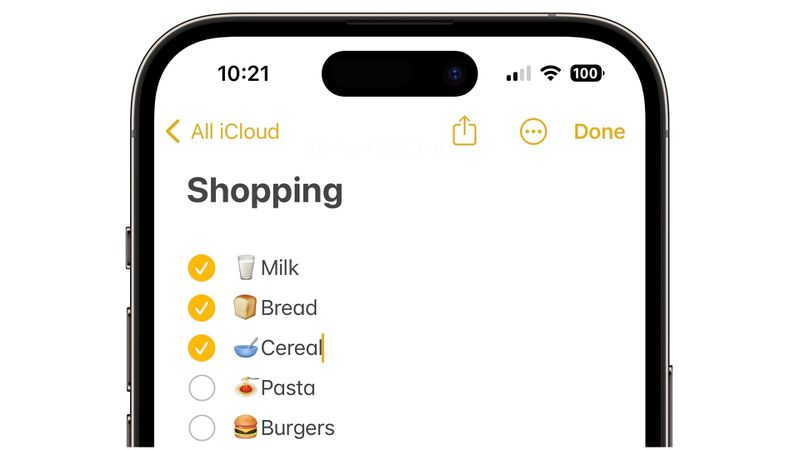
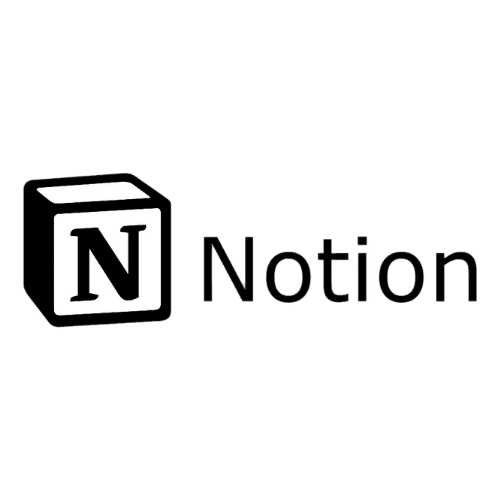
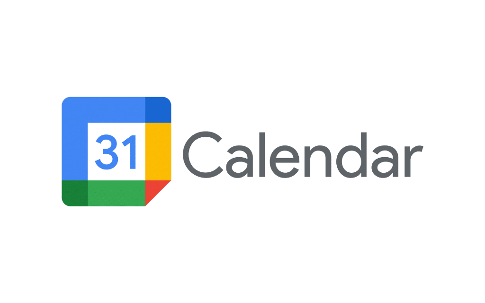
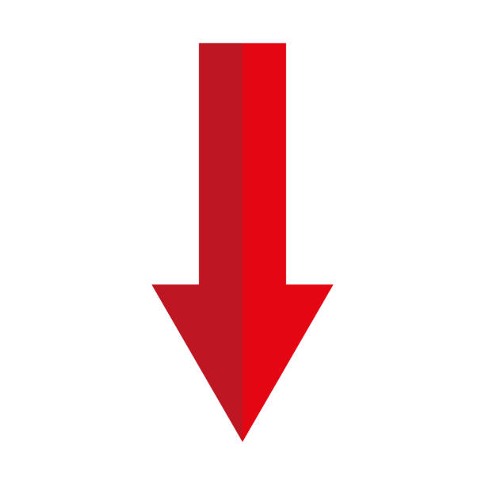

Mana tēma bija plānošanas rīki.
Es izveidoju animāciju par trīs lietotnēm, kuras es savā ikdienā izmantoju, lai efektīvi pānotu savu laiku
Apple Notes es ikdienā izmantoju, lai veidotu sarakstus, ar to, kas tuvākajā laikā ir jāizdara. Piemēram, sportošana, mācīšanās, mājasdarbi, utt.

Ikdienā es izmantoju aplikāciju ''Notion'' lai sekotu līdzi visu priekšmetu mājasdarbiem, un kā es tos plānoju izdarīt.

Google Calandar galvenokārt izmantoju, lai sekotu līdzi pārbaudes darbu plānotajiem datumiem un mājasdarbu iesniegšanas datumiem.

